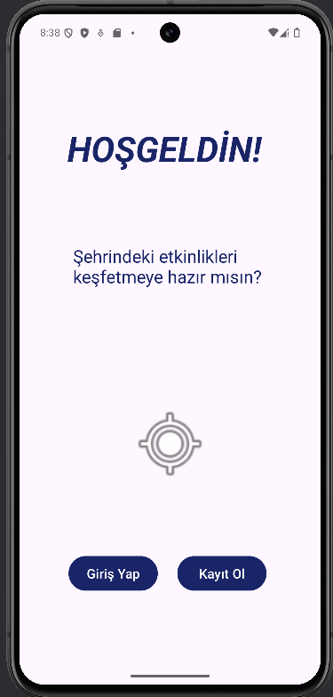
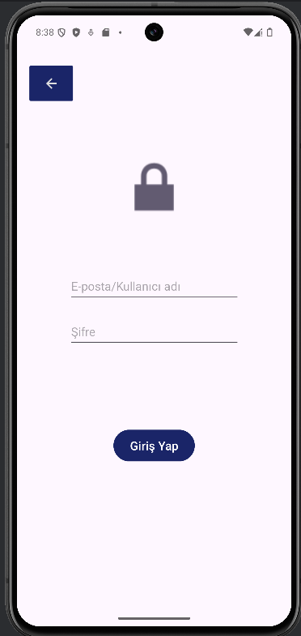
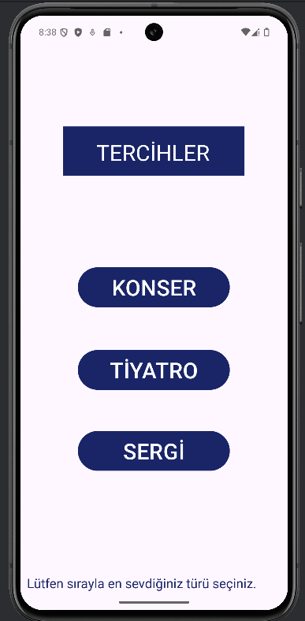
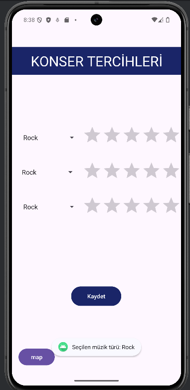
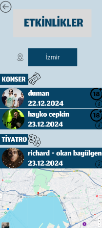

Proje Hakkında
LocaLive, etkinlik organizatörleri ve katılımcılar arasında köprü kurmayı hedefleyen yenilikçi bir platformdur.
Özellikler
- Etkinlik takibi ve görüntüleme
- Canlı konuma göre ve beğenilere göre öneriler
- Katılımcı geri bildirim sistemi
Amacımız
Etkinliklerin daha etkili bir şekilde planlanmasını sağlamak ve kullanıcı deneyimini artırmak.
Mobil Uygulama Görselleri





Bu proje, kar amacı gütmeyen bir bitirme projesidir.